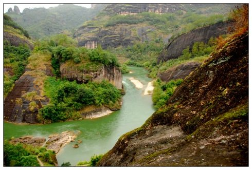

武夷山之旅
发表于：2016.9.9
武夷山自然保护区以山貌雄伟和生物多样性而闻名于世，地跨福建省武夷山、建阳、光泽三市（县），江西省铅山县处，总面积为56527.4公顷，主峰黄岗山位于江西省铅山县桐木村境内，其最高峰海拔2157.8米，为大陆东南第一峰，是整个华东六省一市地区的最高山峰，号称“华东屋脊”、“武夷支柱”。是福建省最大的自然保护区，距武夷山市区60公里，是世界同纬度带保存最完整的中亚热带森林生态系统，保护区建于1979年，是森林生态和野生动物类型的国家重点保护区，1987年被联合国教科文组织接纳为“人与生物圈”世界自然保护网成，1992年被联合国定为全球多样性保护区。全国已建国家自然保护区155处。武夷山自然博物馆就建在保护区三港的溪岸旁。
赞
评论
分享
已经是最后一篇了
上一篇：关于茶文化的知识


评论区
此路不通
1楼
评论时间：2016-11-20 18:12:32
回复看来我应该多努力些才行，要不然我的博客就这么一直没有流量下去，岂不是太过于冷冷清清了？
此路不通
1楼
评论时间：2016-11-20 18:12:32
回复看来我应该多努力些才行，要不然我的博客就这么一直没有流量下去，岂不是太过于冷冷清清了？
此路不通
1楼
评论时间：2016-11-20 18:12:32
回复看来我应该多努力些才行，要不然我的博客就这么一直没有流量下去，岂不是太过于冷冷清清了？
发表评论